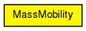
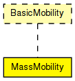

This is a random mobility model for a mobile host with a mass. It is the one used in "Optimized Smooth Handoffs in Mobile IP" by Perkins &Wang.
"An MH moves within the room according to the following pattern. It moves along a straight line for a certain period of time before it makes a turn. This moving period is a random number, normally distributed with average of 5 seconds and standard deviation of 0.1 second. When it makes a turn, the new direction (angle) in which it will move is a normally distributed random number with average equal to the previous direction and standard deviation of 30 degrees. Its speed is also a normally distributed random number, with a controlled average, ranging from 0.1 to 0.45 (unit/sec), and standard deviation of 0.01 (unit/sec). A new such random number is picked as its speed when it makes a turn. This pattern of mobility is intended to model node movement during which the nodes have momentum, and thus do not start, stop, or turn abruptly. When it hits a wall, it reflects off the wall at the same angle; in our simulated world, there is little other choice."
This implementation can be parameterized a bit more, via the changeInterval, changeAngleBy and changeSpeedBy parameters. The parameters described above correspond to the following settings:
See also: ChannelControl
Author: Emin Ilker Cetinbas, Andras Varga
The following diagram shows usage relationships between types. Unresolved types are missing from the diagram.
The following diagram shows inheritance relationships for this type. Unresolved types are missing from the diagram.
| Name | Type | Default value | Description |
|---|---|---|---|
| debug | bool | false |
debug switch |
| x | double | -1 |
start x coordinate (-1 = display string position, or random if it's missing) |
| y | double | -1 |
start y coordinate (-1 = display string position, or random if it's missing) |
| changeInterval | double |
frequency of changing speed and angle (can be random) [s] |
|
| changeAngleBy | double |
change angle by this much (can be random) [deg] |
|
| speed | double | 2mps |
speed (can be random, updated every changeInterval) [m/s] |
| updateInterval | double | 100ms |
time interval to update the hosts position |
| Name | Value | Description |
|---|---|---|
| display | i=block/cogwheel_s |
// // This is a random mobility model for a mobile host with a mass. It is the // one used in "Optimized Smooth Handoffs in Mobile IP" by Perkins &Wang. // // "An MH moves within the room according to the following pattern. It moves // along a straight line for a certain period of time before it makes a turn. // This moving period is a random number, normally distributed with average of // 5 seconds and standard deviation of 0.1 second. When it makes a turn, the // new direction (angle) in which it will move is a normally distributed // random number with average equal to the previous direction and standard // deviation of 30 degrees. Its speed is also a normally distributed random // number, with a controlled average, ranging from 0.1 to 0.45 (unit/sec), and // standard deviation of 0.01 (unit/sec). A new such random number is picked // as its speed when it makes a turn. This pattern of mobility is intended to // model node movement during which the nodes have momentum, and thus do not // start, stop, or turn abruptly. When it hits a wall, it reflects off the // wall at the same angle; in our simulated world, there is little other // choice." // // This implementation can be parameterized a bit more, via the changeInterval, // changeAngleBy and changeSpeedBy parameters. The parameters described above // correspond to the following settings: // - changeInterval = normal(5, 0.1) // - changeAngleBy = normal(0, 30) // - speed = normal(avgSpeed, 0.01) // // @see ChannelControl // @author Emin Ilker Cetinbas, Andras Varga // simple MassMobility like BasicMobility { parameters: bool debug = default(false); // debug switch double x = default(-1); // start x coordinate (-1 = display string position, or random if it's missing) double y = default(-1); // start y coordinate (-1 = display string position, or random if it's missing) volatile double changeInterval @unit("s"); // frequency of changing speed and angle (can be random) [s] volatile double changeAngleBy @unit("deg"); // change angle by this much (can be random) [deg] volatile double speed @unit("mps") = default(2mps); // speed (can be random, updated every changeInterval) [m/s] double updateInterval @unit("s") = default(100ms); // time interval to update the hosts position @display("i=block/cogwheel_s"); }